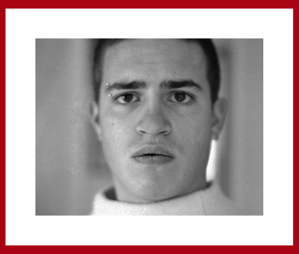

Photos et GIMP
Photo travaillée sur GIMP
Nous avons retouché cette image avec les calques niveaux.

Photo avec Marie-Louise
Nous avons remise droite et créé une Marie-Louise.

Exercice lors de test
Nous avons supprimé des éléments et fait une Marie-Louise premier test.

Exemple fait moi-même
J'ai fait cette Marie-Louise avec l'outil motif dans GIMP

Retouche de tâches
Grâce à GIMP nous avons effacé des pétouilles
Encore des retouches
Nous avons effacé un ensemble de pétouilles
Photo prise sur internet